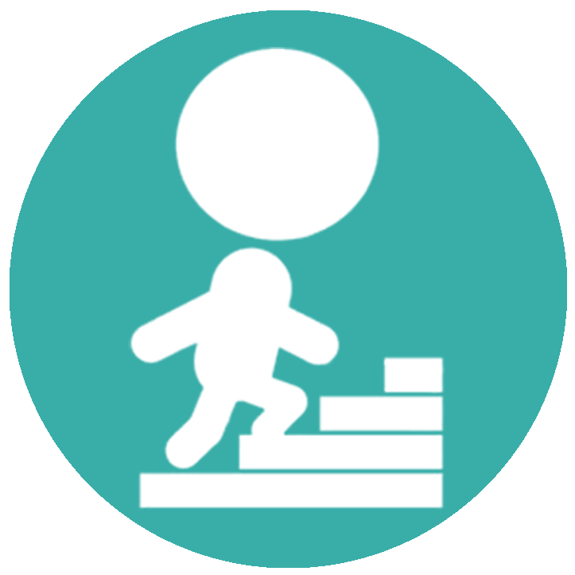
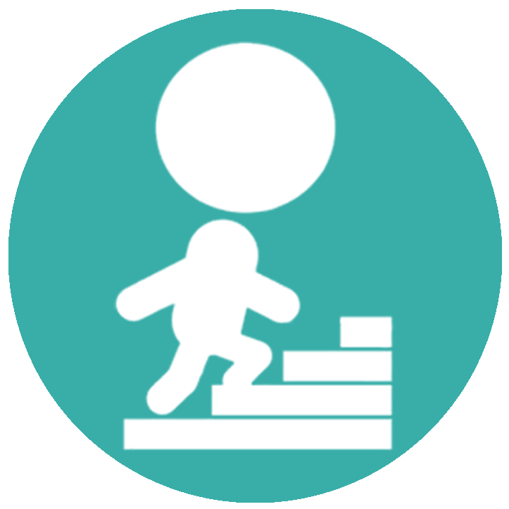
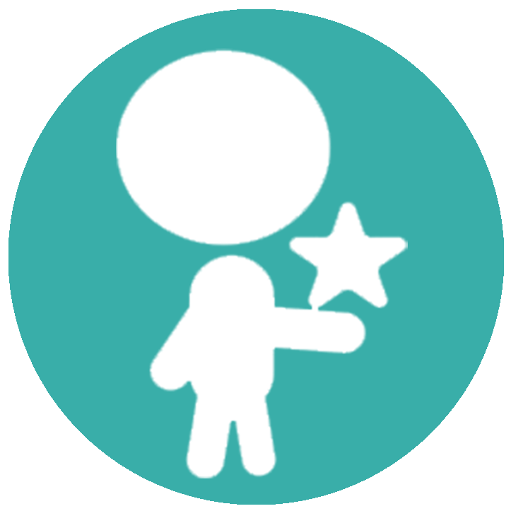

|  |
MotivatedI am a self taught Front End Engineer with half years experience in the Software Industry. I am very thankful for the opportunites I have had to learn what you see here on this website! |
|  |
MotivatedI am a self taught Front End Engineer with half years experience in the Software Industry. I am very thankful for the opportunites I have had to learn what you see here on this website! |
CuriousWhat I love the most about development is the facing the issue, finding the selution, solving the problem and learning new knowledge. My passion is writing clean code with an emphasis on using the latest development technologies. |
|  |
CompetentThis website is build completely from what I current learned. The goal of this website is to display what I have been able to learn thus far in my career as a Software Engineer. |